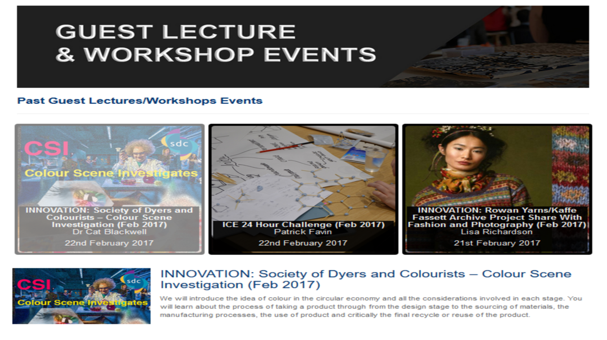

<div class="wrapper">
		<div class="fixed">
			<br />
				<div class="content">
					<div id="text">
						<div style='font-size: 2em; color: #4582ec; font-weight: bold; padding-bottom: 0.3em; text-align: center;'>Guest Lectures Project</div>
							<div id="projects">
								<div id="myCarousel" class="carousel slide" data-ride="carousel">
									<!-- Indicators -->
									<ol class="carousel-indicators">
										<li data-target="#myCarousel" data-slide-to="0" class="active"></li>
									</ol>
									
									<!-- Wrapper for slides -->
									<div class="carousel-inner">
										<div class="item active">
											
										</div>
									</div>

									<!-- Left and right controls -->
									<a class="left carousel-control" href="#myCarousel" data-slide="prev">
										<span class="glyphicon glyphicon-chevron-left"></span>
										<span class="sr-only">Previous</span>
									</a>

									<a class="right carousel-control" href="#myCarousel" data-slide="next">
										<span class="glyphicon glyphicon-chevron-right"></span>
										<span class="sr-only">Next</span>
									</a>

								</div>
								
								<div align="center">
									<ul class="list-inline idxIcons" style='font-size: 1.9em; margin-top: 0.5em;'>
										<li>
											<a href="https://www.hud.ac.uk/schools/artdesignandarchitecture/placementsandenterprise/guestlectures/" target="_blank">
												<i class="fa fa-external-link"></i>View Site
											</a>
										</li>
									</ul>
								</div>
								
								<br />

								<div class="row">
									<div class="col-md-10 col-md-offset-1">
										<p>The Guest Lectures project is a web application project that was created for the University of Huddersfield for a 3 month internship as a junior web developer. The system was proposed by the Art, Design and Architecture school and head of department.
										<p>The purpose of the system was to create a web system where guest lectures and events could be advertise for the students of this school. Students would then be able to book on these events if they wish to attend. The system would be used to reduce paperwork for the marketing team of the school so rather than using an external site like eventbrite and also doing paper work, they would have their own site to track each event.</p>
										<p>Guest lecture web application features includes a login system based on access. Everyone who would view the site would be able to see all the past events. However on live events, students and staff members would only be able to log in to view upcoming and live events and be able to book. Above that staff members would only be able to see the admin area where they are able to create new events and make changes to email notification.</p>
										<p>The advanced feature of this system was sending automatic emails and reminders to students. Previously the marketing team would have to do this manually but with this system, they are able to set a reminder, and final reminder to selected groups that are aimed at for the event. The system would send an email reminding them of this event and to book quickly.</p>
										<p>This system was presented to the head of deans of the university and other schools within the university. The system had got excellent feedback which lead to the staff members of other schools wanting to implement it.</p>
										<p>Below is a table of what type of software and skills that I have used for this system in order to create it. I have also included a link above to the site if you wish to view it. <b>Please note that the site is hosted on the University of Huddersfield website and belong to them. Other than the public page, the site requires a login account to access further. If you wish to know further about this, please contact me</b></p>
										
										<table class="table table-hover">
											<tr>
												<td class="col-md-3"><strong>System</strong></td>
												<td>
													<strong>Software</strong>
													</td>
												<td>
													<strong>Skills/Programming Language</strong>
												</td>
												</tr>
											<tr>
												<td class="col-md-3">Database System</td>
												<td>
													Sql Server 2013
												</td>
												<td>
													Sql, Database Structure
												</td>
											</tr>
											<tr>
												<td class="col-md-3">Web System</td>
												<td>
													Adobe Dreamweaver CC
												</td>
												<td>
													PHP, HTML, CSS, Javascript/Jquery
												</td>
											</tr>
											<tr>
												<td class="col-md-3">Graphic/Design</td>
												<td>
													Adobe Photoshop CC
												</td>
												<td>
													Photoshop skill
												</td>
											</tr>
											<tr>
												<td class="col-md-3">Hosting System</td>
												<td>
													Terminal Four System
												</td>
												<td>
													HTML/PHP, Hosting skills, Training for system
												</td>
											</tr>
										</table>
									
									</div>
								</div>
							</div>
						</div>
					</div>
				</div>
			</div>
